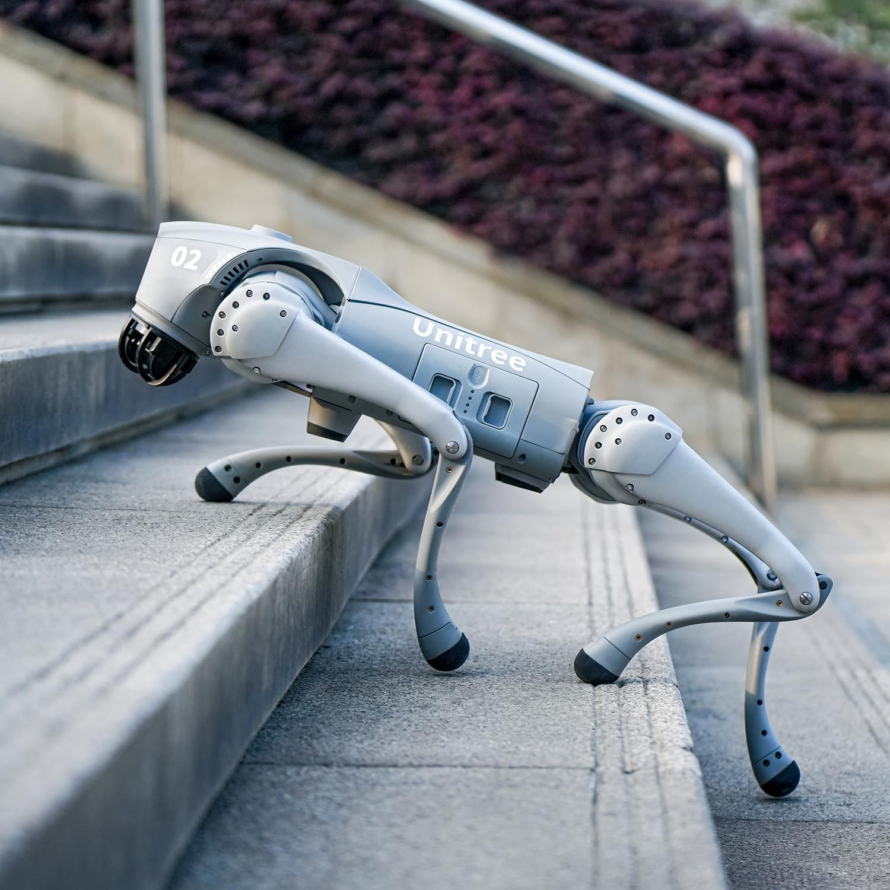

Lab Platforms
Our lab is equipped with a diverse set of robotic platforms and state-of-the-art infrastructure. This hardware enables a broad range of research in legged locomotion, manipulation, navigation and multi-agent systems. Below are some of our key platforms.

Unitree G1 Humanoid

Unitree Go2 Quadruped

Unitree B1 Quadruped

Frank Emika Panda Arm